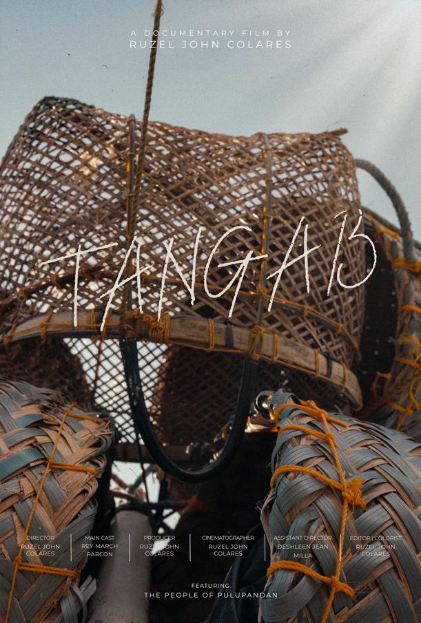

Featured Documentary
Tangab
A documentary film by Ruzel John Colares
TANGAB is a short documentary about the shrimp fishers of Pulupandan, Negros Occidental. The film captures their work at sea, from diving for shrimp and bringing their catch back to shore, to parts of the process of turning shrimp into bagoong, a traditional Filipino food product. It highlights their dedication, hard work, and the importance of this livelihood in providing for their families.